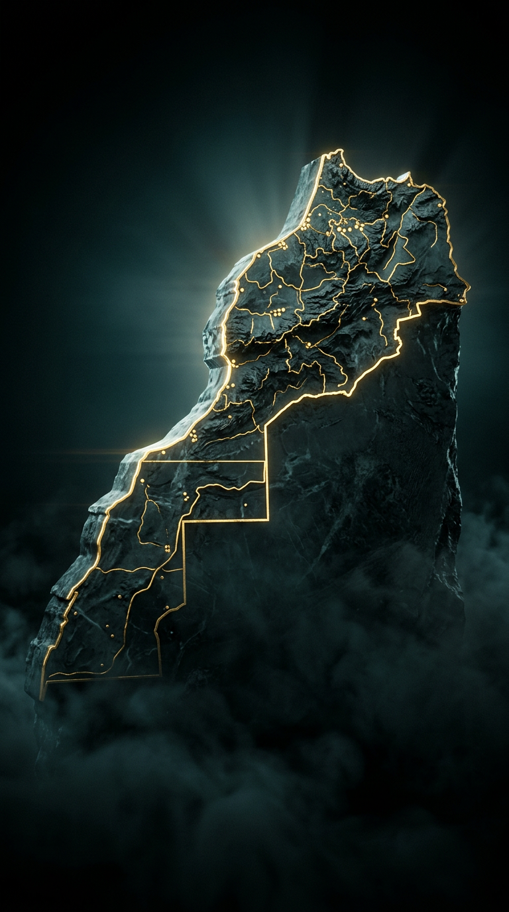
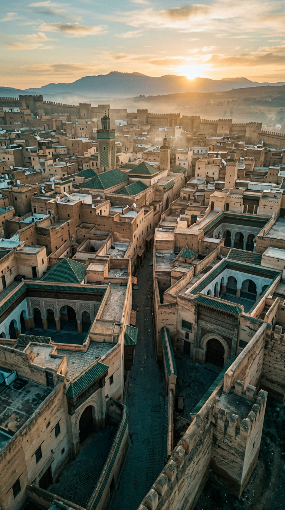
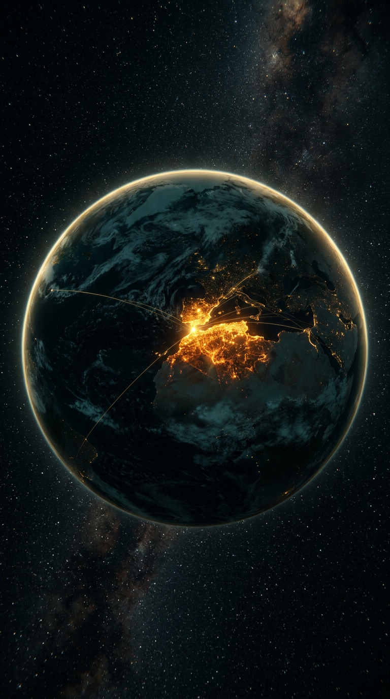
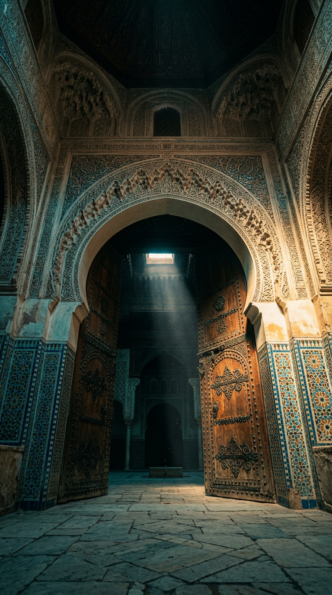
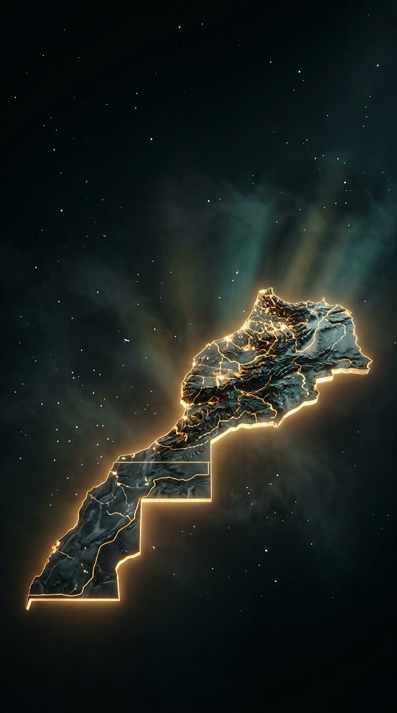

وثائقي سينمائي مصغّر بمدى 18 ثانية — لا موسيقى، فقط الصمت الدرامي والمؤثرات السينمائية وصوت راوٍ يفتح فجوة فضول لا تُغلق إلا في النهاية.





| # | قص الصورة | بداية VO | نهاية VO | كابشن محروق مقترح |
|---|---|---|---|---|
| 1 | 0.00–3.00 | 0.10 | 3.56 | (بلا نص — صورة وسؤال صوتي فقط) |
| 2 | 3.00–7.00 | 3.68 | 7.22 | هوية لم تنقطع منذ 12 قرناً |
| 3 | 7.00–11.00 | 7.34 | 10.97 | العالم العربي · أفريقيا · أوروبا |
| 4 | 11.00–14.00 | 11.09 | 14.02 | بوابة بين الحضارات |
| 5 | 14.00–18.00 | 14.14 | 17.89 | هل تعلم عن المغرب ؟ (العنوان) |
ملف الكابشنز الجاهز: ../subtitles/captions_ar.srt — توقيتاته مضبوطة على الماستر النهائي. برومبتات توليد الحركة لكل لقطة: ../prompts/shots.md.
#المغرب #هل_تعلم #وثائقي #تاريخ #معلومات../prompts/shots.md ← اكتم صوت الأداة ← اجمع اللقطات ← ضع الماستر ← احرق الكابشنز.